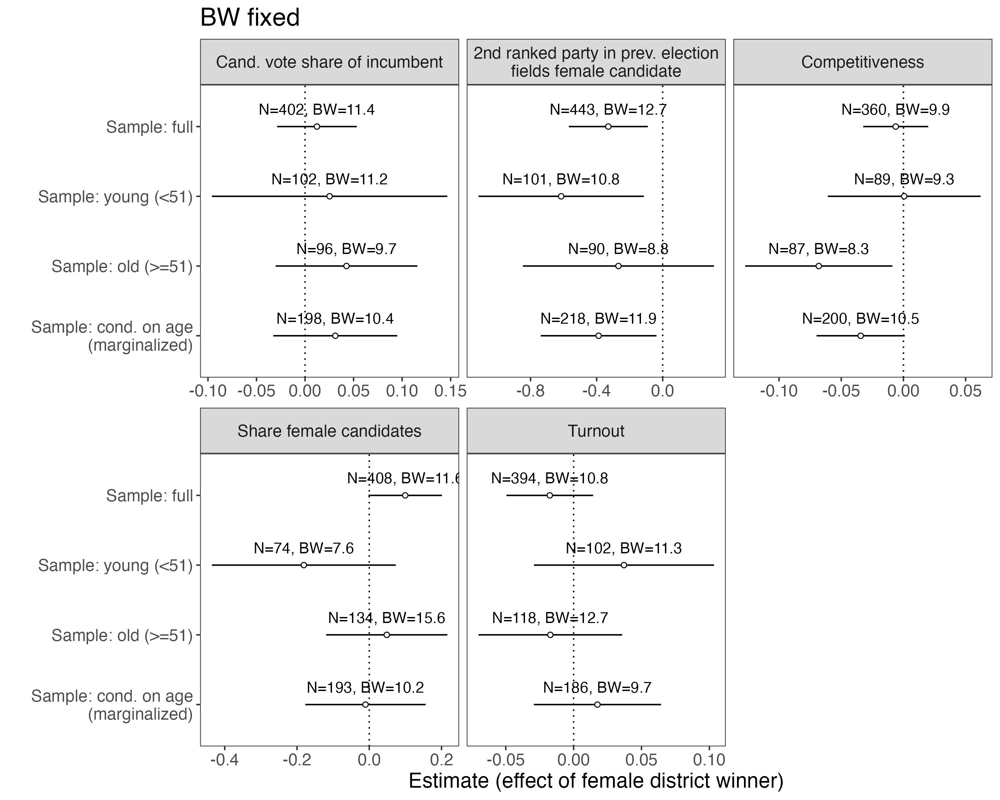
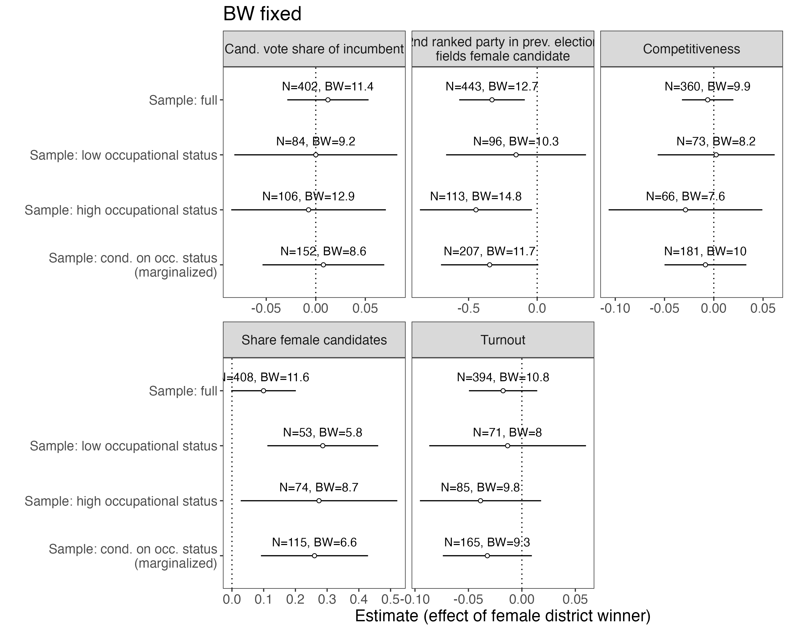
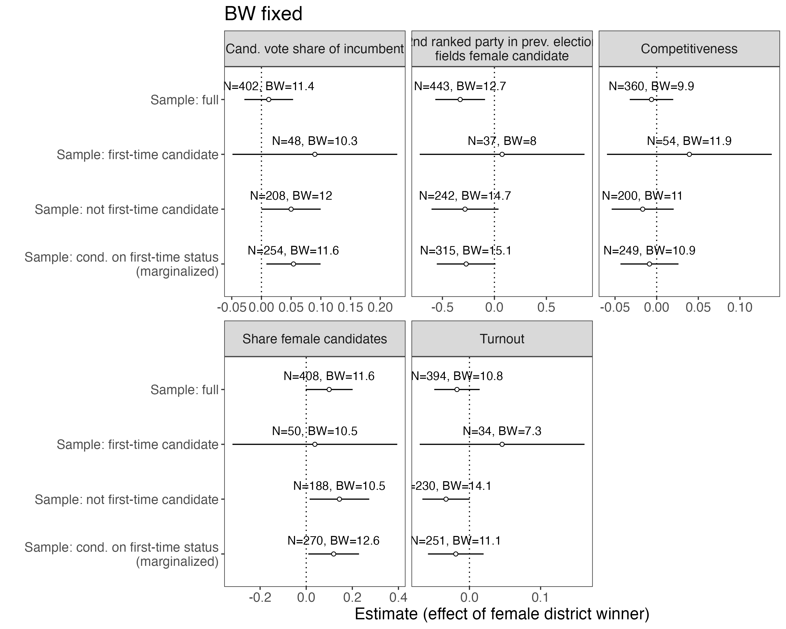
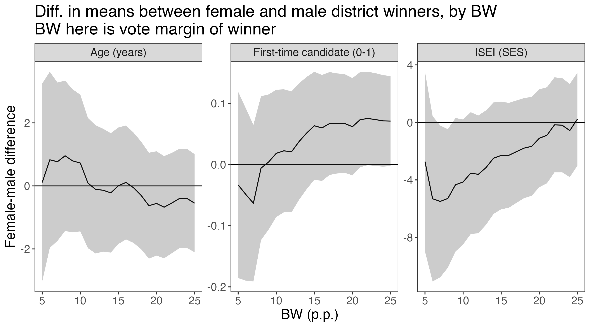
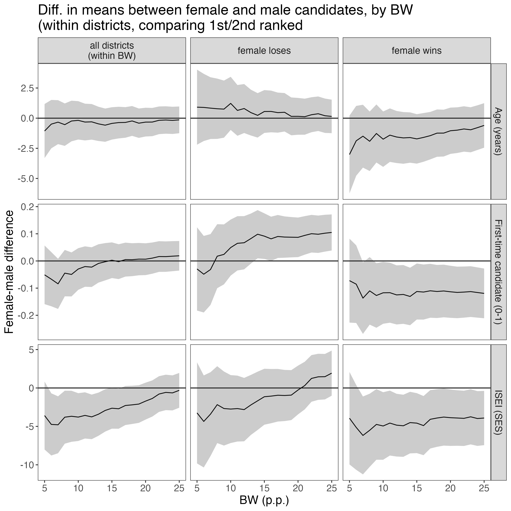
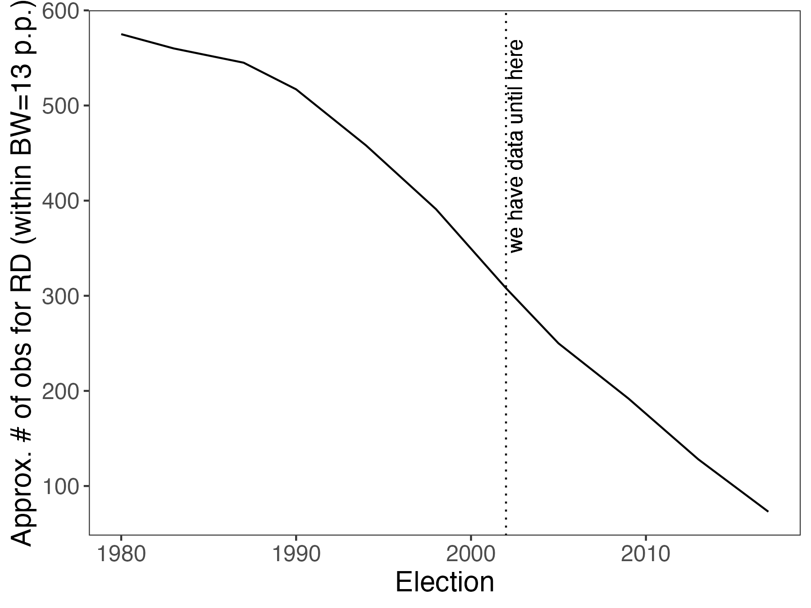

RD
Main RD results
Optimal BWs for each outcome / subset
Conditional on age
Note: facet labels are outcomes

Conditional on occ. status
Note: facet labels are outcomes

Conditional on being a first-time candidate
Note: facet labels are outcomes

Balance
Across districts
This compares female to male district winners, conditional on the difference in vote shares. This is for the subset of opposite-gender races.

Within districts
This compares female to male candidates, i.e. the first and second ranked candidates in each district. The sample is limited to opposite-gender races. Results are conditional on the difference in vote shares between the first and second ranked candidates.
Subsets are defined by gender of election winner (first column is results independent of election winner).

Number of observations if we extend data backwards
This is cumulative number of observations conditional on number of elections (i.e. increases the further back in time we go) – this is already for the sample of races with opposite-gender candidates and within 13p.p. bandwidth.

More info
- Setting: SMD races in German federal elections
- 5 (6 after 2013) main parties always field candidates in all districts in all elections
- Voters vote for one candidate, candidate who wins a plurality of vote goes to parliament
- No term limits
- Mixed system: 50% of candidates are elected in districts, 50% are elected through party lists (candidates can be nominated in districts and be on the list)
- Sample: SMDs in federal elections, 1994-2021 (8 elections)
- Subset to races where top-2 candidates are of opposite gender
- Treatment: female candidate won in prev. election in the same districts
- Running variable: defined as difference between female and male candidate in prev. election
- Specification: No covariates, SEs clustered by electoral districts
- Not sure if clustering makes sense here, could also not do this
- Could add election FEs / State FEs as covars?
- Outcomes:
- Turnout (0-1)
- Share female candidates in the district (0-1) (of the 5/6 main parties)
- Competitiveness: vote share difference between first and second-ranked candidate (0-1)
- Similar to running variable
- ‘Incumbent candidate’ vote share (0-1)
- Assume candidate of party \(p\) wins in district \(j\) in election \(t\). This is the vote share of the candidate of party \(p\) in district \(j\) in election \(t+1\), regardless of whether party \(p\) fields the same candidate again or not.
- 2nd ranked party in prev election fields female candidate (0/1)
- Assume party \(p\) is ranked second in district \(j\) in election \(t\). This measures whether party \(p\) fields a female candidate in election \(t+1\)
Subsetting: this is always based on top two candidates in the previous election, i.e. the condition (eg “young candidate”) needs to hold for both candidates - This means that there is a “missing” subset of districts that are not covered by the subsets, ie districts for which the condition only holds for one of the two candidates
Bandwidths: I show this for separate optimal BWs by sample
Extending data backwards: Extended back to 94, for prior elections the number of districts is lower (due to reunification) - could check whether it makes sense to extend even further (earliest would be 83 I think)
Exclusion due to redistricting: I use shapefiles to track redistricting, and I exclude districts that are less than 90% the same as in the previous election (happy to explain what that means)
Potential other outcomes: - Total voteshare of left-leaning parties - Binary measures of fielding female candidate by party